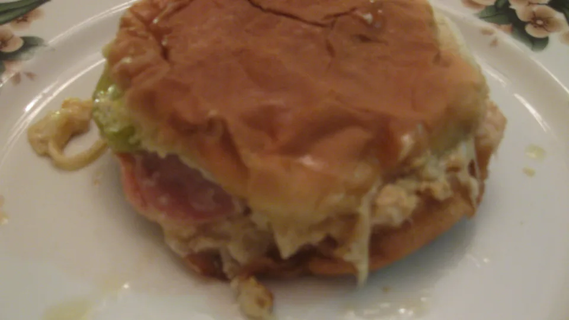

Pressed Cuban Burger

Description
Making Pressed Cuban Burger much easier than it looks. It is wholesome and truly satisfying.
This recipe takes about 5 minutes to prepare and 15 minutes to cook.
This recipe is for 6 servings.We will itemize the Ingredients needed to make this recipe
and the steps below.
Ingredients
- ½ cup mayonnaise
- 1 lime, juiced
- 1 tablespoon ground cumin
- 2 pounds ground pork
- 2 ½ teaspoons grill seasoning
- 6 ounces ham, thinly sliced
- 9 ounces Swiss cheese, thinly sliced
- 6 challah rolls, split
- 2 cups shredded iceberg lettuce
- 18 dill pickle slices
Steps
- In a small bowl, stir together the mayonnaise, lime juice and ground cumin. Set aside.
- In a medium bowl, combine the ground pork and grill seasoning. Form into 6 patties.
- Preheat a stovetop grill over medium-low heat. In a large nonstick skillet set over medium heat, cook the patties for 6 minutes per side. During the final 2 minutes, top each patty with an equal amount of ham and cheese.
Cover the skillet and cook until the cheese melts.
- Spread the mayonnaise mixture on the cut sides of each roll. Place a patty on each roll bottom,
top with 1/3 cup shredded lettuce, 3 pickles and set the roll top into place.
- Arrange the burgers on the grill. Weight the burgers using a heavy pan, such as a cast-iron skillet. Cook until crispy and grill marks appear, 1 to 2 minutes.
Flip the burgers and repeat.